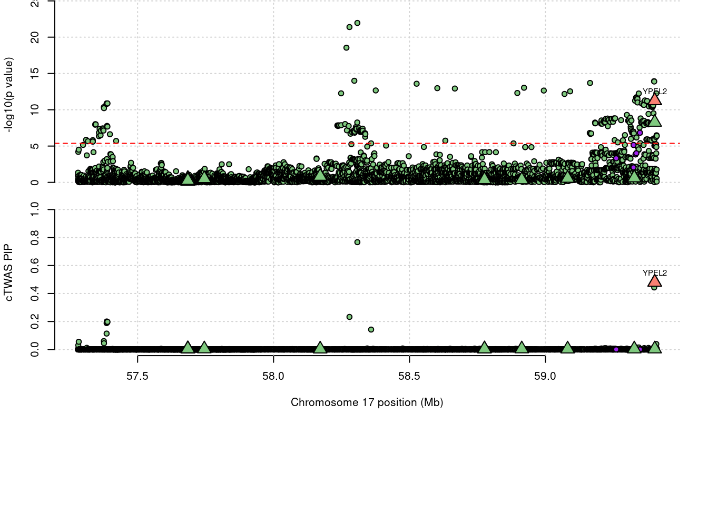
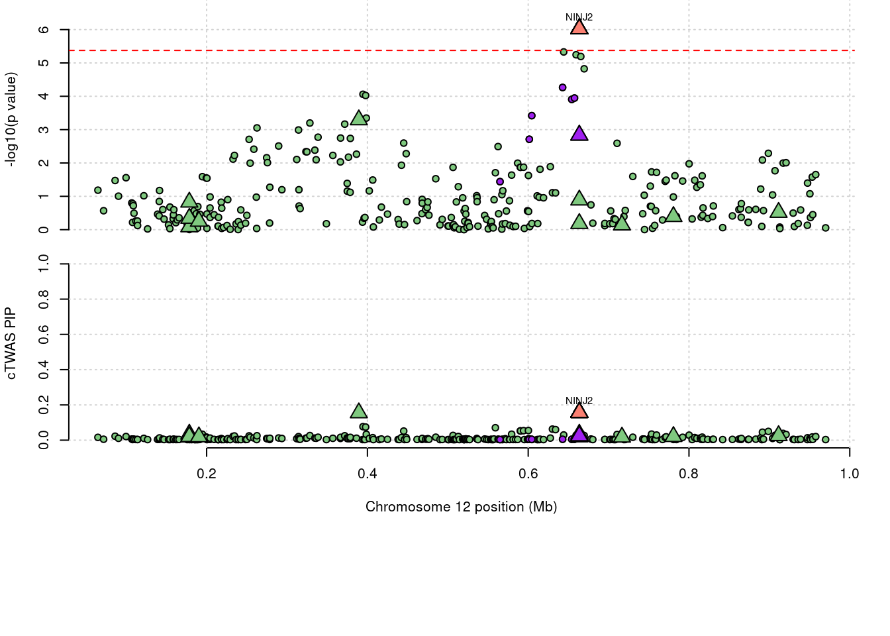
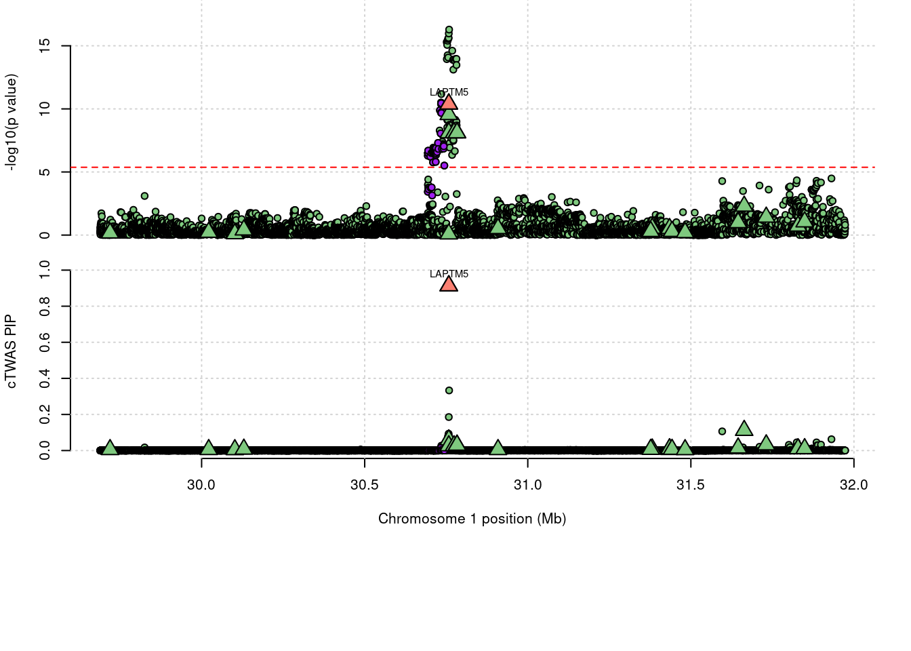

White Blood - WholeBlood methylation
sheng Qian
2022-10-18
Last updated: 2023-02-15
Checks: 5 2
Knit directory: cTWAS_analysis/
This reproducible R Markdown analysis was created with workflowr (version 1.7.0). The Checks tab describes the reproducibility checks that were applied when the results were created. The Past versions tab lists the development history.
The R Markdown file has unstaged changes. To know which version of the R Markdown file created these results, you’ll want to first commit it to the Git repo. If you’re still working on the analysis, you can ignore this warning. When you’re finished, you can run wflow_publish to commit the R Markdown file and build the HTML.
Great job! The global environment was empty. Objects defined in the global environment can affect the analysis in your R Markdown file in unknown ways. For reproduciblity it’s best to always run the code in an empty environment.
The command set.seed(20211220) was run prior to running the code in the R Markdown file. Setting a seed ensures that any results that rely on randomness, e.g. subsampling or permutations, are reproducible.
Great job! Recording the operating system, R version, and package versions is critical for reproducibility.
Nice! There were no cached chunks for this analysis, so you can be confident that you successfully produced the results during this run.
Using absolute paths to the files within your workflowr project makes it difficult for you and others to run your code on a different machine. Change the absolute path(s) below to the suggested relative path(s) to make your code more reproducible.
| absolute | relative |
|---|---|
| /project2/xinhe/shengqian/cTWAS/cTWAS_analysis/data/ | data |
| /project2/xinhe/shengqian/cTWAS/cTWAS_analysis/code/ctwas_config_b38.R | code/ctwas_config_b38.R |
| /project2/xinhe/shengqian/cTWAS/cTWAS_analysis/data/mqtl/WholeBlood.db | data/mqtl/WholeBlood.db |
| /project2/xinhe/shengqian/cTWAS/cTWAS_analysis/data/G_list.RData | data/G_list.RData |
| /project2/xinhe/shengqian/cTWAS/cTWAS_analysis/code/locus_plot.R | code/locus_plot.R |
Great! You are using Git for version control. Tracking code development and connecting the code version to the results is critical for reproducibility.
The results in this page were generated with repository version 1c8d70c. See the Past versions tab to see a history of the changes made to the R Markdown and HTML files.
Note that you need to be careful to ensure that all relevant files for the analysis have been committed to Git prior to generating the results (you can use wflow_publish or wflow_git_commit). workflowr only checks the R Markdown file, but you know if there are other scripts or data files that it depends on. Below is the status of the Git repository when the results were generated:
Ignored files:
Ignored: .Rhistory
Ignored: .ipynb_checkpoints/
Untracked files:
Untracked: Proposal plots.R
Untracked: RGS14.pdf
Untracked: RNF186.pdf
Untracked: SCZ_annotation.xlsx
Untracked: SLC8B1.pdf
Untracked: analysis/.ipynb_checkpoints/
Untracked: cache/
Untracked: code/.ipynb_checkpoints/
Untracked: data/.ipynb_checkpoints/
Untracked: data/FUMA_output/
Untracked: data/GO_Terms/
Untracked: data/GTEx_Analysis_v8_eQTL.tar
Untracked: data/G_list.RData
Untracked: data/IBD_ME/
Untracked: data/LDL/
Untracked: data/LDL_E_S/
Untracked: data/LDL_M/
Untracked: data/LDL_S/
Untracked: data/PGC3_SCZ_wave3_public.v2.tsv
Untracked: data/SCZ/
Untracked: data/SCZ_2018/
Untracked: data/SCZ_2018_S/
Untracked: data/SCZ_2020/
Untracked: data/SCZ_S/
Untracked: data/Supplementary Table 15 - MAGMA.xlsx
Untracked: data/Supplementary Table 20 - Prioritised Genes.xlsx
Untracked: data/UKBB/
Untracked: data/UKBB_SNPs_Info.text
Untracked: data/WhiteBlood_E/
Untracked: data/WhiteBlood_E_M/
Untracked: data/WhiteBlood_E_S_M/
Untracked: data/WhiteBlood_M/
Untracked: data/cpg_annot.RData
Untracked: data/eqtl/
Untracked: data/gencode.v26.GRCh38.genes.gtf
Untracked: data/gene_OMIM.txt
Untracked: data/gene_pip_0.8.txt
Untracked: data/gwas_sumstats/
Untracked: data/magma.genes.out
Untracked: data/mashr_Heart_Atrial_Appendage.db
Untracked: data/mashr_sqtl/
Untracked: data/mqtl/
Untracked: data/notes.txt
Untracked: data/scz_2018.RDS
Untracked: data/summary_known_genes_annotations.xlsx
Untracked: submit.sh
Untracked: temp_LDR/
Unstaged changes:
Deleted: analysis/Atrial_Fibrillation_Heart_Atrial_Appendage.Rmd
Deleted: analysis/Atrial_Fibrillation_Heart_Left_Ventricle.Rmd
Deleted: analysis/Autism_Brain_Amygdala.Rmd
Deleted: analysis/Autism_Brain_Anterior_cingulate_cortex_BA24.Rmd
Deleted: analysis/Autism_Brain_Caudate_basal_ganglia.Rmd
Deleted: analysis/Autism_Brain_Cerebellar_Hemisphere.Rmd
Deleted: analysis/Autism_Brain_Cerebellum.Rmd
Deleted: analysis/Autism_Brain_Cortex.Rmd
Deleted: analysis/Autism_Brain_Frontal_Cortex_BA9.Rmd
Deleted: analysis/Autism_Brain_Hippocampus.Rmd
Deleted: analysis/Autism_Brain_Hypothalamus.Rmd
Deleted: analysis/Autism_Brain_Nucleus_accumbens_basal_ganglia.Rmd
Deleted: analysis/Autism_Brain_Putamen_basal_ganglia.Rmd
Deleted: analysis/Autism_Brain_Spinal_cord_cervical_c-1.Rmd
Deleted: analysis/Autism_Brain_Substantia_nigra.Rmd
Deleted: analysis/BMI_Brain_Amygdala.Rmd
Deleted: analysis/BMI_Brain_Amygdala_S.Rmd
Deleted: analysis/BMI_Brain_Anterior_cingulate_cortex_BA24.Rmd
Deleted: analysis/BMI_Brain_Anterior_cingulate_cortex_BA24_S.Rmd
Deleted: analysis/BMI_Brain_Caudate_basal_ganglia.Rmd
Deleted: analysis/BMI_Brain_Caudate_basal_ganglia_S.Rmd
Deleted: analysis/BMI_Brain_Cerebellar_Hemisphere.Rmd
Deleted: analysis/BMI_Brain_Cerebellar_Hemisphere_S.Rmd
Deleted: analysis/BMI_Brain_Cerebellum.Rmd
Deleted: analysis/BMI_Brain_Cerebellum_S.Rmd
Deleted: analysis/BMI_Brain_Cortex.Rmd
Deleted: analysis/BMI_Brain_Cortex_S.Rmd
Deleted: analysis/BMI_Brain_Frontal_Cortex_BA9.Rmd
Deleted: analysis/BMI_Brain_Frontal_Cortex_BA9_S.Rmd
Deleted: analysis/BMI_Brain_Hippocampus.Rmd
Deleted: analysis/BMI_Brain_Hippocampus_S.Rmd
Deleted: analysis/BMI_Brain_Hypothalamus.Rmd
Deleted: analysis/BMI_Brain_Hypothalamus_S.Rmd
Deleted: analysis/BMI_Brain_Nucleus_accumbens_basal_ganglia.Rmd
Deleted: analysis/BMI_Brain_Nucleus_accumbens_basal_ganglia_S.Rmd
Deleted: analysis/BMI_Brain_Putamen_basal_ganglia.Rmd
Deleted: analysis/BMI_Brain_Putamen_basal_ganglia_S.Rmd
Deleted: analysis/BMI_Brain_Spinal_cord_cervical_c-1.Rmd
Deleted: analysis/BMI_Brain_Spinal_cord_cervical_c-1_S.Rmd
Deleted: analysis/BMI_Brain_Substantia_nigra.Rmd
Deleted: analysis/BMI_Brain_Substantia_nigra_S.Rmd
Deleted: analysis/BMI_S_results.Rmd
Deleted: analysis/Glucose_Adipose_Subcutaneous.Rmd
Deleted: analysis/Glucose_Adipose_Visceral_Omentum.Rmd
Modified: analysis/WhiteBlood_WholeBlood_E.Rmd
Modified: analysis/WhiteBlood_WholeBlood_E_M.Rmd
Modified: analysis/WhiteBlood_WholeBlood_E_S_M.Rmd
Modified: analysis/WhiteBlood_WholeBlood_M.Rmd
Deleted: code/White_Blood_M_out/White_Blood_BreastMammary.err
Deleted: code/White_Blood_M_out/White_Blood_BreastMammary.out
Deleted: code/White_Blood_M_out/White_Blood_ColonTransverse.err
Deleted: code/White_Blood_M_out/White_Blood_ColonTransverse.out
Deleted: code/White_Blood_M_out/White_Blood_KidneyCortex.err
Deleted: code/White_Blood_M_out/White_Blood_KidneyCortex.out
Deleted: code/White_Blood_M_out/White_Blood_Lung.err
Deleted: code/White_Blood_M_out/White_Blood_Lung.out
Deleted: code/White_Blood_M_out/White_Blood_MuscleSkeletal.err
Deleted: code/White_Blood_M_out/White_Blood_MuscleSkeletal.out
Deleted: code/White_Blood_M_out/White_Blood_Ovary.err
Deleted: code/White_Blood_M_out/White_Blood_Ovary.out
Deleted: code/White_Blood_M_out/White_Blood_Prostate.err
Deleted: code/White_Blood_M_out/White_Blood_Prostate.out
Deleted: code/White_Blood_M_out/White_Blood_Testis.err
Deleted: code/White_Blood_M_out/White_Blood_Testis.out
Deleted: code/White_Blood_M_out/White_Blood_WholeBlood.err
Deleted: code/White_Blood_M_out/White_Blood_WholeBlood.out
Deleted: code/run_IBD_ctwas_rss_LDR_ME.R
Note that any generated files, e.g. HTML, png, CSS, etc., are not included in this status report because it is ok for generated content to have uncommitted changes.
These are the previous versions of the repository in which changes were made to the R Markdown (analysis/WhiteBlood_WholeBlood_M.Rmd) and HTML (docs/WhiteBlood_WholeBlood_M.html) files. If you’ve configured a remote Git repository (see ?wflow_git_remote), click on the hyperlinks in the table below to view the files as they were in that past version.
| File | Version | Author | Date | Message |
|---|---|---|---|---|
| Rmd | 213f0e4 | sq-96 | 2023-02-15 | update |
| html | 213f0e4 | sq-96 | 2023-02-15 | update |
| Rmd | ada1828 | sq-96 | 2023-02-12 | update |
| html | 5575f7f | sq-96 | 2023-01-26 | update |
| html | 684d806 | sq-96 | 2023-01-26 | update |
| Rmd | 363ce6a | sq-96 | 2023-01-26 | update |
Weight QC
[1] 13069[1] 11858
1 2 3 4 5 6 7 8 9 10 11 12 13 14 15 16
1206 901 655 485 593 787 624 536 368 631 707 583 336 351 390 545
17 18 19 20 21 22
707 160 529 312 179 273 [1] 1Load ctwas results
Check convergence of parameters

| Version | Author | Date |
|---|---|---|
| 684d806 | sq-96 | 2023-01-26 |
#estimated group prior
estimated_group_prior <- estimated_group_prior_all[,ncol(group_prior_rec)]
print(estimated_group_prior) SNP gene
0.0002296 0.0136450 #estimated group prior variance
estimated_group_prior_var <- estimated_group_prior_var_all[,ncol(group_prior_var_rec)]
print(estimated_group_prior_var) SNP gene
18.16 22.91 #estimated enrichment
estimated_enrichment <- estimated_enrichment_all[ncol(group_prior_var_rec)]
print(estimated_enrichment)[1] 59.42#report sample size
print(sample_size)[1] 350470#report group size
print(group_size) SNP gene
8696600 11858 #estimated group PVE
estimated_group_pve <- estimated_group_pve_all[,ncol(group_prior_rec)]
print(estimated_group_pve) SNP gene
0.10348 0.01058 #total PVE
sum(estimated_group_pve)[1] 0.1141#attributable PVE
estimated_group_pve/sum(estimated_group_pve) SNP gene
0.90726 0.09274 Genes with highest PIPs
#distribution of PIPs
hist(ctwas_gene_res$susie_pip, xlim=c(0,1), main="Distribution of Gene PIPs")
| Version | Author | Date |
|---|---|---|
| 684d806 | sq-96 | 2023-01-26 |
#genes with PIP>0.8 or 20 highest PIPs
head(ctwas_gene_res[order(-ctwas_gene_res$susie_pip),report_cols], max(sum(ctwas_gene_res$susie_pip>0.8), 20)) genename region_tag susie_pip mu2 PVE z num_eqtl
11419 <NA> 6_24 0.9871 163.38 4.602e-04 -1.928 1
11586 ACVRL1 12_32 0.9860 54.44 1.532e-04 -7.281 1
11669 NLRC5 16_30 0.9791 45.92 1.283e-04 -6.699 1
11679 MYO1C 17_2 0.9771 44.76 1.248e-04 6.588 1
11654 ITGAL 16_24 0.9681 152.53 4.213e-04 12.478 1
11858 <NA> 21_18 0.9601 62.06 1.700e-04 -7.930 1
11355 AC034220.3 5_79 0.9584 131.36 3.592e-04 -13.657 1
11521 RP11-351M16.3 10_20 0.9545 125.03 3.405e-04 -11.496 1
11788 CTC-503J8.4 19_6 0.9470 23.06 6.230e-05 -4.440 1
11323 CTD-2330K9.3 3_35 0.9463 67.85 1.832e-04 -8.414 1
11470 <NA> 6_34 0.9461 24.08 6.500e-05 -4.669 1
11534 CD6 11_34 0.9456 25.48 6.875e-05 -4.279 1
11831 <NA> 20_38 0.9364 26.24 7.012e-05 3.735 1
11555 AP000908.1 11_67 0.9357 77.08 2.058e-04 -8.003 1
11332 <NA> 4_40 0.9142 34.54 9.008e-05 -7.206 1
11272 LAPTM5 1_20 0.9132 38.28 9.975e-05 6.601 1
11507 <NA> 8_83 0.9092 29.76 7.722e-05 5.231 1
11326 <NA> 4_8 0.9029 25.77 6.638e-05 4.861 1
11318 EOMES 3_20 0.8851 60.43 1.526e-04 7.702 1
11505 RP11-136O12.2 8_83 0.8820 35.71 8.986e-05 5.719 1
11338 <NA> 5_35 0.8709 40.59 1.009e-04 -5.997 1
11502 CCT6A 7_40 0.8686 49.07 1.216e-04 -5.881 1
11703 <NA> 17_23 0.8549 65.49 1.597e-04 12.877 1
11701 PSMD3 17_23 0.8543 612.47 1.493e-03 -37.218 1
11794 LSM4 19_15 0.8142 24.47 5.684e-05 3.864 1GO enrichment analysis for genes with PIP>0.8
#number of genes for gene set enrichment
length(genes)[1] 25DisGeNET enrichment analysis for genes with PIP>0.5
Warning in disease_enrichment(entities = genes, vocabulary = "HGNC", database =
"CURATED"): Removing duplicates from input list. Description
10 Epistaxis
19 Telangiectasis
20 Pulmonary Arteriovenous Fistulas
22 Congenital pulmonary arteriovenous malformation
26 Arteriovenous malformation of liver
34 HEREDITARY HEMORRHAGIC TELANGIECTASIA-RELATED PULMONARY ARTERIAL HYPERTENSION
35 OSLER-RENDU-WEBER SYNDROME 2
37 Pulmonary arteriovenous malformation
16 Liver Cirrhosis, Experimental
25 Sensorineural hearing loss, bilateral
FDR Ratio BgRatio
10 0.004947 1/8 1/9703
19 0.004947 1/8 1/9703
20 0.004947 1/8 1/9703
22 0.004947 1/8 1/9703
26 0.004947 1/8 1/9703
34 0.004947 1/8 1/9703
35 0.004947 1/8 1/9703
37 0.004947 1/8 1/9703
16 0.007416 4/8 774/9703
25 0.007416 1/8 3/9703WebGestalt enrichment analysis for genes with PIP>0.5
Loading the functional categories...
Loading the ID list...
Loading the reference list...
Performing the enrichment analysis...Warning in oraEnrichment(interestGeneList, referenceGeneList, geneSet, minNum =
minNum, : No significant gene set is identified based on FDR 0.05!NULLLoading required package: S4VectorsLoading required package: stats4Loading required package: BiocGenerics
Attaching package: 'BiocGenerics'The following objects are masked from 'package:stats':
IQR, mad, sd, var, xtabsThe following objects are masked from 'package:base':
anyDuplicated, append, as.data.frame, basename, cbind, colnames,
dirname, do.call, duplicated, eval, evalq, Filter, Find, get, grep,
grepl, intersect, is.unsorted, lapply, Map, mapply, match, mget,
order, paste, pmax, pmax.int, pmin, pmin.int, Position, rank,
rbind, Reduce, rownames, sapply, setdiff, sort, table, tapply,
union, unique, unsplit, which.max, which.min
Attaching package: 'S4Vectors'The following objects are masked from 'package:base':
expand.grid, I, unnameLoading required package: IRangesLoading required package: GenomicRangesLoading required package: GenomeInfoDbLoading required package: grida <- locus_plot(region_tag="17_34", return_table=T,
focus=NULL,
label_genes=NULL,
rerun_ctwas=F,
rerun_load_only=F,
label_panel="both",
legend_side="left",
legend_panel="")
| Version | Author | Date |
|---|---|---|
| 213f0e4 | sq-96 | 2023-02-15 |
a <- locus_plot(region_tag="19_32", return_table=T,
focus=NULL,
label_genes=NULL,
rerun_ctwas=F,
rerun_load_only=F,
label_panel="both",
legend_side="left",
legend_panel="")
a <- locus_plot(region_tag="12_1", return_table=T,
focus=NULL,
label_genes=NULL,
rerun_ctwas=F,
rerun_load_only=F,
label_panel="both",
legend_side="left",
legend_panel="")
| Version | Author | Date |
|---|---|---|
| 213f0e4 | sq-96 | 2023-02-15 |
a <- locus_plot(region_tag="1_20", return_table=T,
focus=NULL,
label_genes=NULL,
rerun_ctwas=F,
rerun_load_only=F,
label_panel="both",
legend_side="left",
legend_panel="")
| Version | Author | Date |
|---|---|---|
| 213f0e4 | sq-96 | 2023-02-15 |
sessionInfo()R version 4.1.0 (2021-05-18)
Platform: x86_64-pc-linux-gnu (64-bit)
Running under: CentOS Linux 7 (Core)
Matrix products: default
BLAS/LAPACK: /software/openblas-0.3.13-el7-x86_64/lib/libopenblas_haswellp-r0.3.13.so
locale:
[1] LC_CTYPE=en_US.UTF-8 LC_NUMERIC=C
[3] LC_TIME=en_US.UTF-8 LC_COLLATE=en_US.UTF-8
[5] LC_MONETARY=en_US.UTF-8 LC_MESSAGES=en_US.UTF-8
[7] LC_PAPER=en_US.UTF-8 LC_NAME=C
[9] LC_ADDRESS=C LC_TELEPHONE=C
[11] LC_MEASUREMENT=en_US.UTF-8 LC_IDENTIFICATION=C
attached base packages:
[1] grid stats4 stats graphics grDevices utils datasets
[8] methods base
other attached packages:
[1] Gviz_1.38.4 GenomicRanges_1.46.1 GenomeInfoDb_1.30.1
[4] IRanges_2.28.0 S4Vectors_0.32.4 BiocGenerics_0.40.0
[7] WebGestaltR_0.4.4 disgenet2r_0.99.2 enrichR_3.1
[10] cowplot_1.1.1 ggplot2_3.4.0 workflowr_1.7.0
loaded via a namespace (and not attached):
[1] backports_1.2.1 Hmisc_4.7-2
[3] BiocFileCache_2.2.1 systemfonts_1.0.4
[5] plyr_1.8.8 igraph_1.3.5
[7] lazyeval_0.2.2 splines_4.1.0
[9] BiocParallel_1.28.3 digest_0.6.31
[11] ensembldb_2.18.4 foreach_1.5.2
[13] htmltools_0.5.4 fansi_1.0.3
[15] checkmate_2.1.0 magrittr_2.0.3
[17] memoise_2.0.1 BSgenome_1.62.0
[19] cluster_2.1.2 doParallel_1.0.17
[21] tzdb_0.3.0 Biostrings_2.62.0
[23] readr_2.1.3 matrixStats_0.63.0
[25] vroom_1.6.0 svglite_2.1.0
[27] prettyunits_1.1.1 jpeg_0.1-10
[29] colorspace_2.0-3 blob_1.2.3
[31] rappdirs_0.3.3 xfun_0.35
[33] dplyr_1.0.10 callr_3.7.3
[35] crayon_1.5.2 RCurl_1.98-1.9
[37] jsonlite_1.8.4 VariantAnnotation_1.40.0
[39] survival_3.2-11 iterators_1.0.14
[41] glue_1.6.2 gtable_0.3.1
[43] zlibbioc_1.40.0 XVector_0.34.0
[45] DelayedArray_0.20.0 apcluster_1.4.10
[47] scales_1.2.1 DBI_1.1.3
[49] rngtools_1.5.2 Rcpp_1.0.9
[51] htmlTable_2.4.1 progress_1.2.2
[53] foreign_0.8-81 bit_4.0.5
[55] Formula_1.2-4 htmlwidgets_1.6.0
[57] httr_1.4.4 RColorBrewer_1.1-3
[59] ellipsis_0.3.2 pkgconfig_2.0.3
[61] XML_3.99-0.13 farver_2.1.0
[63] nnet_7.3-16 sass_0.4.4
[65] dbplyr_2.2.1 deldir_1.0-6
[67] utf8_1.2.2 tidyselect_1.2.0
[69] labeling_0.4.2 rlang_1.0.6
[71] reshape2_1.4.4 later_1.3.0
[73] AnnotationDbi_1.56.2 munsell_0.5.0
[75] tools_4.1.0 cachem_1.0.6
[77] cli_3.4.1 generics_0.1.3
[79] RSQLite_2.2.19 evaluate_0.19
[81] stringr_1.5.0 fastmap_1.1.0
[83] yaml_2.3.6 processx_3.8.0
[85] knitr_1.41 bit64_4.0.5
[87] fs_1.5.2 AnnotationFilter_1.18.0
[89] KEGGREST_1.34.0 doRNG_1.8.2
[91] whisker_0.4.1 xml2_1.3.3
[93] biomaRt_2.50.3 compiler_4.1.0
[95] rstudioapi_0.14 filelock_1.0.2
[97] curl_4.3.2 png_0.1-8
[99] tibble_3.1.8 bslib_0.4.1
[101] stringi_1.7.8 highr_0.9
[103] ps_1.7.2 GenomicFeatures_1.46.5
[105] lattice_0.20-44 ProtGenerics_1.26.0
[107] Matrix_1.3-3 vctrs_0.5.1
[109] pillar_1.8.1 lifecycle_1.0.3
[111] jquerylib_0.1.4 data.table_1.14.6
[113] bitops_1.0-7 httpuv_1.6.7
[115] rtracklayer_1.54.0 R6_2.5.1
[117] BiocIO_1.4.0 latticeExtra_0.6-30
[119] promises_1.2.0.1 gridExtra_2.3
[121] codetools_0.2-18 dichromat_2.0-0.1
[123] assertthat_0.2.1 SummarizedExperiment_1.24.0
[125] rprojroot_2.0.3 rjson_0.2.21
[127] withr_2.5.0 GenomicAlignments_1.30.0
[129] Rsamtools_2.10.0 GenomeInfoDbData_1.2.7
[131] parallel_4.1.0 hms_1.1.2
[133] rpart_4.1-15 rmarkdown_2.19
[135] MatrixGenerics_1.6.0 git2r_0.30.1
[137] biovizBase_1.42.0 getPass_0.2-2
[139] Biobase_2.54.0 base64enc_0.1-3
[141] interp_1.1-3 restfulr_0.0.15